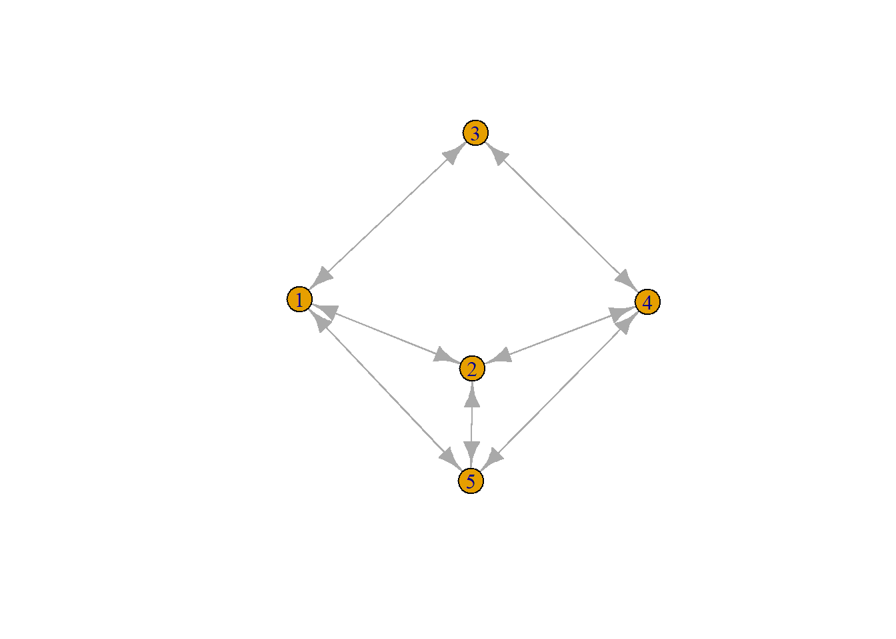

Descriptive Statistics
Paige Kemper
2025-09-12
1 R Markdown
Make a matrix: Review how to make column, dataframe, and matrix
#matrix(data, nrow, ncol, byrow, dimnames)
num1 <- c(0, 1, 2, 3, 4, 5, 6, 7, 8)
num2 <- data.frame(0, 1, 2, 3, 4, 5, 6, 7, 8)Try making a 100x100 matrix
## ego is row, alter is column
base <- c(0, 1)
mat1 <- matrix(base, nrow=100, ncol = 100, byrow = TRUE)
mat1## [,1] [,2] [,3] [,4] [,5] [,6] [,7] [,8] [,9] [,10] [,11] [,12] [,13] [,14] [,15] [,16] [,17]
## [1,] 0 1 0 1 0 1 0 1 0 1 0 1 0 1 0 1 0
## [2,] 0 1 0 1 0 1 0 1 0 1 0 1 0 1 0 1 0
## [3,] 0 1 0 1 0 1 0 1 0 1 0 1 0 1 0 1 0
## [4,] 0 1 0 1 0 1 0 1 0 1 0 1 0 1 0 1 0
## [5,] 0 1 0 1 0 1 0 1 0 1 0 1 0 1 0 1 0
## [6,] 0 1 0 1 0 1 0 1 0 1 0 1 0 1 0 1 0
## [7,] 0 1 0 1 0 1 0 1 0 1 0 1 0 1 0 1 0
## [8,] 0 1 0 1 0 1 0 1 0 1 0 1 0 1 0 1 0
## [9,] 0 1 0 1 0 1 0 1 0 1 0 1 0 1 0 1 0
## [10,] 0 1 0 1 0 1 0 1 0 1 0 1 0 1 0 1 0
## [11,] 0 1 0 1 0 1 0 1 0 1 0 1 0 1 0 1 0
## [12,] 0 1 0 1 0 1 0 1 0 1 0 1 0 1 0 1 0
## [13,] 0 1 0 1 0 1 0 1 0 1 0 1 0 1 0 1 0
## [14,] 0 1 0 1 0 1 0 1 0 1 0 1 0 1 0 1 0
## [15,] 0 1 0 1 0 1 0 1 0 1 0 1 0 1 0 1 0
## [16,] 0 1 0 1 0 1 0 1 0 1 0 1 0 1 0 1 0
## [17,] 0 1 0 1 0 1 0 1 0 1 0 1 0 1 0 1 0
## [18,] 0 1 0 1 0 1 0 1 0 1 0 1 0 1 0 1 0
## [19,] 0 1 0 1 0 1 0 1 0 1 0 1 0 1 0 1 0
## [20,] 0 1 0 1 0 1 0 1 0 1 0 1 0 1 0 1 0
## [21,] 0 1 0 1 0 1 0 1 0 1 0 1 0 1 0 1 0
## [22,] 0 1 0 1 0 1 0 1 0 1 0 1 0 1 0 1 0
## [23,] 0 1 0 1 0 1 0 1 0 1 0 1 0 1 0 1 0
## [24,] 0 1 0 1 0 1 0 1 0 1 0 1 0 1 0 1 0
## [25,] 0 1 0 1 0 1 0 1 0 1 0 1 0 1 0 1 0
## [26,] 0 1 0 1 0 1 0 1 0 1 0 1 0 1 0 1 0
## [27,] 0 1 0 1 0 1 0 1 0 1 0 1 0 1 0 1 0
## [28,] 0 1 0 1 0 1 0 1 0 1 0 1 0 1 0 1 0
## [29,] 0 1 0 1 0 1 0 1 0 1 0 1 0 1 0 1 0
## [30,] 0 1 0 1 0 1 0 1 0 1 0 1 0 1 0 1 0
## [31,] 0 1 0 1 0 1 0 1 0 1 0 1 0 1 0 1 0
## [32,] 0 1 0 1 0 1 0 1 0 1 0 1 0 1 0 1 0
## [33,] 0 1 0 1 0 1 0 1 0 1 0 1 0 1 0 1 0
## [34,] 0 1 0 1 0 1 0 1 0 1 0 1 0 1 0 1 0
## [35,] 0 1 0 1 0 1 0 1 0 1 0 1 0 1 0 1 0
## [36,] 0 1 0 1 0 1 0 1 0 1 0 1 0 1 0 1 0
## [37,] 0 1 0 1 0 1 0 1 0 1 0 1 0 1 0 1 0
## [38,] 0 1 0 1 0 1 0 1 0 1 0 1 0 1 0 1 0
## [39,] 0 1 0 1 0 1 0 1 0 1 0 1 0 1 0 1 0
## [40,] 0 1 0 1 0 1 0 1 0 1 0 1 0 1 0 1 0
## [41,] 0 1 0 1 0 1 0 1 0 1 0 1 0 1 0 1 0
## [42,] 0 1 0 1 0 1 0 1 0 1 0 1 0 1 0 1 0
## [43,] 0 1 0 1 0 1 0 1 0 1 0 1 0 1 0 1 0
## [44,] 0 1 0 1 0 1 0 1 0 1 0 1 0 1 0 1 0
## [45,] 0 1 0 1 0 1 0 1 0 1 0 1 0 1 0 1 0
## [46,] 0 1 0 1 0 1 0 1 0 1 0 1 0 1 0 1 0
## [47,] 0 1 0 1 0 1 0 1 0 1 0 1 0 1 0 1 0
## [48,] 0 1 0 1 0 1 0 1 0 1 0 1 0 1 0 1 0
## [49,] 0 1 0 1 0 1 0 1 0 1 0 1 0 1 0 1 0
## [50,] 0 1 0 1 0 1 0 1 0 1 0 1 0 1 0 1 0
## [51,] 0 1 0 1 0 1 0 1 0 1 0 1 0 1 0 1 0
## [52,] 0 1 0 1 0 1 0 1 0 1 0 1 0 1 0 1 0
## [53,] 0 1 0 1 0 1 0 1 0 1 0 1 0 1 0 1 0
## [54,] 0 1 0 1 0 1 0 1 0 1 0 1 0 1 0 1 0
## [55,] 0 1 0 1 0 1 0 1 0 1 0 1 0 1 0 1 0
## [56,] 0 1 0 1 0 1 0 1 0 1 0 1 0 1 0 1 0
## [57,] 0 1 0 1 0 1 0 1 0 1 0 1 0 1 0 1 0
## [58,] 0 1 0 1 0 1 0 1 0 1 0 1 0 1 0 1 0
## [59,] 0 1 0 1 0 1 0 1 0 1 0 1 0 1 0 1 0
## [60,] 0 1 0 1 0 1 0 1 0 1 0 1 0 1 0 1 0
## [61,] 0 1 0 1 0 1 0 1 0 1 0 1 0 1 0 1 0
## [62,] 0 1 0 1 0 1 0 1 0 1 0 1 0 1 0 1 0
## [63,] 0 1 0 1 0 1 0 1 0 1 0 1 0 1 0 1 0
## [64,] 0 1 0 1 0 1 0 1 0 1 0 1 0 1 0 1 0
## [65,] 0 1 0 1 0 1 0 1 0 1 0 1 0 1 0 1 0
## [66,] 0 1 0 1 0 1 0 1 0 1 0 1 0 1 0 1 0
## [67,] 0 1 0 1 0 1 0 1 0 1 0 1 0 1 0 1 0
## [68,] 0 1 0 1 0 1 0 1 0 1 0 1 0 1 0 1 0
## [69,] 0 1 0 1 0 1 0 1 0 1 0 1 0 1 0 1 0
## [70,] 0 1 0 1 0 1 0 1 0 1 0 1 0 1 0 1 0
## [71,] 0 1 0 1 0 1 0 1 0 1 0 1 0 1 0 1 0
## [72,] 0 1 0 1 0 1 0 1 0 1 0 1 0 1 0 1 0
## [73,] 0 1 0 1 0 1 0 1 0 1 0 1 0 1 0 1 0
## [74,] 0 1 0 1 0 1 0 1 0 1 0 1 0 1 0 1 0
## [75,] 0 1 0 1 0 1 0 1 0 1 0 1 0 1 0 1 0
## [76,] 0 1 0 1 0 1 0 1 0 1 0 1 0 1 0 1 0
## [77,] 0 1 0 1 0 1 0 1 0 1 0 1 0 1 0 1 0
## [78,] 0 1 0 1 0 1 0 1 0 1 0 1 0 1 0 1 0
## [79,] 0 1 0 1 0 1 0 1 0 1 0 1 0 1 0 1 0
## [80,] 0 1 0 1 0 1 0 1 0 1 0 1 0 1 0 1 0
## [81,] 0 1 0 1 0 1 0 1 0 1 0 1 0 1 0 1 0
## [82,] 0 1 0 1 0 1 0 1 0 1 0 1 0 1 0 1 0
## [83,] 0 1 0 1 0 1 0 1 0 1 0 1 0 1 0 1 0
## [84,] 0 1 0 1 0 1 0 1 0 1 0 1 0 1 0 1 0
## [85,] 0 1 0 1 0 1 0 1 0 1 0 1 0 1 0 1 0
## [86,] 0 1 0 1 0 1 0 1 0 1 0 1 0 1 0 1 0
## [87,] 0 1 0 1 0 1 0 1 0 1 0 1 0 1 0 1 0
## [88,] 0 1 0 1 0 1 0 1 0 1 0 1 0 1 0 1 0
## [89,] 0 1 0 1 0 1 0 1 0 1 0 1 0 1 0 1 0
## [90,] 0 1 0 1 0 1 0 1 0 1 0 1 0 1 0 1 0
## [91,] 0 1 0 1 0 1 0 1 0 1 0 1 0 1 0 1 0
## [92,] 0 1 0 1 0 1 0 1 0 1 0 1 0 1 0 1 0
## [93,] 0 1 0 1 0 1 0 1 0 1 0 1 0 1 0 1 0
## [94,] 0 1 0 1 0 1 0 1 0 1 0 1 0 1 0 1 0
## [95,] 0 1 0 1 0 1 0 1 0 1 0 1 0 1 0 1 0
## [96,] 0 1 0 1 0 1 0 1 0 1 0 1 0 1 0 1 0
## [97,] 0 1 0 1 0 1 0 1 0 1 0 1 0 1 0 1 0
## [98,] 0 1 0 1 0 1 0 1 0 1 0 1 0 1 0 1 0
## [99,] 0 1 0 1 0 1 0 1 0 1 0 1 0 1 0 1 0
## [100,] 0 1 0 1 0 1 0 1 0 1 0 1 0 1 0 1 0
## [,18] [,19] [,20] [,21] [,22] [,23] [,24] [,25] [,26] [,27] [,28] [,29] [,30] [,31] [,32]
## [1,] 1 0 1 0 1 0 1 0 1 0 1 0 1 0 1
## [2,] 1 0 1 0 1 0 1 0 1 0 1 0 1 0 1
## [3,] 1 0 1 0 1 0 1 0 1 0 1 0 1 0 1
## [4,] 1 0 1 0 1 0 1 0 1 0 1 0 1 0 1
## [5,] 1 0 1 0 1 0 1 0 1 0 1 0 1 0 1
## [6,] 1 0 1 0 1 0 1 0 1 0 1 0 1 0 1
## [7,] 1 0 1 0 1 0 1 0 1 0 1 0 1 0 1
## [8,] 1 0 1 0 1 0 1 0 1 0 1 0 1 0 1
## [9,] 1 0 1 0 1 0 1 0 1 0 1 0 1 0 1
## [10,] 1 0 1 0 1 0 1 0 1 0 1 0 1 0 1
## [11,] 1 0 1 0 1 0 1 0 1 0 1 0 1 0 1
## [12,] 1 0 1 0 1 0 1 0 1 0 1 0 1 0 1
## [13,] 1 0 1 0 1 0 1 0 1 0 1 0 1 0 1
## [14,] 1 0 1 0 1 0 1 0 1 0 1 0 1 0 1
## [15,] 1 0 1 0 1 0 1 0 1 0 1 0 1 0 1
## [16,] 1 0 1 0 1 0 1 0 1 0 1 0 1 0 1
## [17,] 1 0 1 0 1 0 1 0 1 0 1 0 1 0 1
## [18,] 1 0 1 0 1 0 1 0 1 0 1 0 1 0 1
## [19,] 1 0 1 0 1 0 1 0 1 0 1 0 1 0 1
## [20,] 1 0 1 0 1 0 1 0 1 0 1 0 1 0 1
## [21,] 1 0 1 0 1 0 1 0 1 0 1 0 1 0 1
## [22,] 1 0 1 0 1 0 1 0 1 0 1 0 1 0 1
## [23,] 1 0 1 0 1 0 1 0 1 0 1 0 1 0 1
## [24,] 1 0 1 0 1 0 1 0 1 0 1 0 1 0 1
## [25,] 1 0 1 0 1 0 1 0 1 0 1 0 1 0 1
## [26,] 1 0 1 0 1 0 1 0 1 0 1 0 1 0 1
## [27,] 1 0 1 0 1 0 1 0 1 0 1 0 1 0 1
## [28,] 1 0 1 0 1 0 1 0 1 0 1 0 1 0 1
## [29,] 1 0 1 0 1 0 1 0 1 0 1 0 1 0 1
## [30,] 1 0 1 0 1 0 1 0 1 0 1 0 1 0 1
## [31,] 1 0 1 0 1 0 1 0 1 0 1 0 1 0 1
## [32,] 1 0 1 0 1 0 1 0 1 0 1 0 1 0 1
## [33,] 1 0 1 0 1 0 1 0 1 0 1 0 1 0 1
## [34,] 1 0 1 0 1 0 1 0 1 0 1 0 1 0 1
## [35,] 1 0 1 0 1 0 1 0 1 0 1 0 1 0 1
## [36,] 1 0 1 0 1 0 1 0 1 0 1 0 1 0 1
## [37,] 1 0 1 0 1 0 1 0 1 0 1 0 1 0 1
## [38,] 1 0 1 0 1 0 1 0 1 0 1 0 1 0 1
## [39,] 1 0 1 0 1 0 1 0 1 0 1 0 1 0 1
## [40,] 1 0 1 0 1 0 1 0 1 0 1 0 1 0 1
## [41,] 1 0 1 0 1 0 1 0 1 0 1 0 1 0 1
## [42,] 1 0 1 0 1 0 1 0 1 0 1 0 1 0 1
## [43,] 1 0 1 0 1 0 1 0 1 0 1 0 1 0 1
## [44,] 1 0 1 0 1 0 1 0 1 0 1 0 1 0 1
## [45,] 1 0 1 0 1 0 1 0 1 0 1 0 1 0 1
## [46,] 1 0 1 0 1 0 1 0 1 0 1 0 1 0 1
## [47,] 1 0 1 0 1 0 1 0 1 0 1 0 1 0 1
## [48,] 1 0 1 0 1 0 1 0 1 0 1 0 1 0 1
## [49,] 1 0 1 0 1 0 1 0 1 0 1 0 1 0 1
## [50,] 1 0 1 0 1 0 1 0 1 0 1 0 1 0 1
## [51,] 1 0 1 0 1 0 1 0 1 0 1 0 1 0 1
## [52,] 1 0 1 0 1 0 1 0 1 0 1 0 1 0 1
## [53,] 1 0 1 0 1 0 1 0 1 0 1 0 1 0 1
## [54,] 1 0 1 0 1 0 1 0 1 0 1 0 1 0 1
## [55,] 1 0 1 0 1 0 1 0 1 0 1 0 1 0 1
## [56,] 1 0 1 0 1 0 1 0 1 0 1 0 1 0 1
## [57,] 1 0 1 0 1 0 1 0 1 0 1 0 1 0 1
## [58,] 1 0 1 0 1 0 1 0 1 0 1 0 1 0 1
## [59,] 1 0 1 0 1 0 1 0 1 0 1 0 1 0 1
## [60,] 1 0 1 0 1 0 1 0 1 0 1 0 1 0 1
## [61,] 1 0 1 0 1 0 1 0 1 0 1 0 1 0 1
## [62,] 1 0 1 0 1 0 1 0 1 0 1 0 1 0 1
## [63,] 1 0 1 0 1 0 1 0 1 0 1 0 1 0 1
## [64,] 1 0 1 0 1 0 1 0 1 0 1 0 1 0 1
## [65,] 1 0 1 0 1 0 1 0 1 0 1 0 1 0 1
## [66,] 1 0 1 0 1 0 1 0 1 0 1 0 1 0 1
## [67,] 1 0 1 0 1 0 1 0 1 0 1 0 1 0 1
## [68,] 1 0 1 0 1 0 1 0 1 0 1 0 1 0 1
## [69,] 1 0 1 0 1 0 1 0 1 0 1 0 1 0 1
## [70,] 1 0 1 0 1 0 1 0 1 0 1 0 1 0 1
## [71,] 1 0 1 0 1 0 1 0 1 0 1 0 1 0 1
## [72,] 1 0 1 0 1 0 1 0 1 0 1 0 1 0 1
## [73,] 1 0 1 0 1 0 1 0 1 0 1 0 1 0 1
## [74,] 1 0 1 0 1 0 1 0 1 0 1 0 1 0 1
## [75,] 1 0 1 0 1 0 1 0 1 0 1 0 1 0 1
## [76,] 1 0 1 0 1 0 1 0 1 0 1 0 1 0 1
## [77,] 1 0 1 0 1 0 1 0 1 0 1 0 1 0 1
## [78,] 1 0 1 0 1 0 1 0 1 0 1 0 1 0 1
## [79,] 1 0 1 0 1 0 1 0 1 0 1 0 1 0 1
## [80,] 1 0 1 0 1 0 1 0 1 0 1 0 1 0 1
## [81,] 1 0 1 0 1 0 1 0 1 0 1 0 1 0 1
## [82,] 1 0 1 0 1 0 1 0 1 0 1 0 1 0 1
## [83,] 1 0 1 0 1 0 1 0 1 0 1 0 1 0 1
## [84,] 1 0 1 0 1 0 1 0 1 0 1 0 1 0 1
## [85,] 1 0 1 0 1 0 1 0 1 0 1 0 1 0 1
## [86,] 1 0 1 0 1 0 1 0 1 0 1 0 1 0 1
## [87,] 1 0 1 0 1 0 1 0 1 0 1 0 1 0 1
## [88,] 1 0 1 0 1 0 1 0 1 0 1 0 1 0 1
## [89,] 1 0 1 0 1 0 1 0 1 0 1 0 1 0 1
## [90,] 1 0 1 0 1 0 1 0 1 0 1 0 1 0 1
## [91,] 1 0 1 0 1 0 1 0 1 0 1 0 1 0 1
## [92,] 1 0 1 0 1 0 1 0 1 0 1 0 1 0 1
## [93,] 1 0 1 0 1 0 1 0 1 0 1 0 1 0 1
## [94,] 1 0 1 0 1 0 1 0 1 0 1 0 1 0 1
## [95,] 1 0 1 0 1 0 1 0 1 0 1 0 1 0 1
## [96,] 1 0 1 0 1 0 1 0 1 0 1 0 1 0 1
## [97,] 1 0 1 0 1 0 1 0 1 0 1 0 1 0 1
## [98,] 1 0 1 0 1 0 1 0 1 0 1 0 1 0 1
## [99,] 1 0 1 0 1 0 1 0 1 0 1 0 1 0 1
## [100,] 1 0 1 0 1 0 1 0 1 0 1 0 1 0 1
## [,33] [,34] [,35] [,36] [,37] [,38] [,39] [,40] [,41] [,42] [,43] [,44] [,45] [,46] [,47]
## [1,] 0 1 0 1 0 1 0 1 0 1 0 1 0 1 0
## [2,] 0 1 0 1 0 1 0 1 0 1 0 1 0 1 0
## [3,] 0 1 0 1 0 1 0 1 0 1 0 1 0 1 0
## [4,] 0 1 0 1 0 1 0 1 0 1 0 1 0 1 0
## [5,] 0 1 0 1 0 1 0 1 0 1 0 1 0 1 0
## [6,] 0 1 0 1 0 1 0 1 0 1 0 1 0 1 0
## [7,] 0 1 0 1 0 1 0 1 0 1 0 1 0 1 0
## [8,] 0 1 0 1 0 1 0 1 0 1 0 1 0 1 0
## [9,] 0 1 0 1 0 1 0 1 0 1 0 1 0 1 0
## [10,] 0 1 0 1 0 1 0 1 0 1 0 1 0 1 0
## [11,] 0 1 0 1 0 1 0 1 0 1 0 1 0 1 0
## [12,] 0 1 0 1 0 1 0 1 0 1 0 1 0 1 0
## [13,] 0 1 0 1 0 1 0 1 0 1 0 1 0 1 0
## [14,] 0 1 0 1 0 1 0 1 0 1 0 1 0 1 0
## [15,] 0 1 0 1 0 1 0 1 0 1 0 1 0 1 0
## [16,] 0 1 0 1 0 1 0 1 0 1 0 1 0 1 0
## [17,] 0 1 0 1 0 1 0 1 0 1 0 1 0 1 0
## [18,] 0 1 0 1 0 1 0 1 0 1 0 1 0 1 0
## [19,] 0 1 0 1 0 1 0 1 0 1 0 1 0 1 0
## [20,] 0 1 0 1 0 1 0 1 0 1 0 1 0 1 0
## [21,] 0 1 0 1 0 1 0 1 0 1 0 1 0 1 0
## [22,] 0 1 0 1 0 1 0 1 0 1 0 1 0 1 0
## [23,] 0 1 0 1 0 1 0 1 0 1 0 1 0 1 0
## [24,] 0 1 0 1 0 1 0 1 0 1 0 1 0 1 0
## [25,] 0 1 0 1 0 1 0 1 0 1 0 1 0 1 0
## [26,] 0 1 0 1 0 1 0 1 0 1 0 1 0 1 0
## [27,] 0 1 0 1 0 1 0 1 0 1 0 1 0 1 0
## [28,] 0 1 0 1 0 1 0 1 0 1 0 1 0 1 0
## [29,] 0 1 0 1 0 1 0 1 0 1 0 1 0 1 0
## [30,] 0 1 0 1 0 1 0 1 0 1 0 1 0 1 0
## [31,] 0 1 0 1 0 1 0 1 0 1 0 1 0 1 0
## [32,] 0 1 0 1 0 1 0 1 0 1 0 1 0 1 0
## [33,] 0 1 0 1 0 1 0 1 0 1 0 1 0 1 0
## [34,] 0 1 0 1 0 1 0 1 0 1 0 1 0 1 0
## [35,] 0 1 0 1 0 1 0 1 0 1 0 1 0 1 0
## [36,] 0 1 0 1 0 1 0 1 0 1 0 1 0 1 0
## [37,] 0 1 0 1 0 1 0 1 0 1 0 1 0 1 0
## [38,] 0 1 0 1 0 1 0 1 0 1 0 1 0 1 0
## [39,] 0 1 0 1 0 1 0 1 0 1 0 1 0 1 0
## [40,] 0 1 0 1 0 1 0 1 0 1 0 1 0 1 0
## [41,] 0 1 0 1 0 1 0 1 0 1 0 1 0 1 0
## [42,] 0 1 0 1 0 1 0 1 0 1 0 1 0 1 0
## [43,] 0 1 0 1 0 1 0 1 0 1 0 1 0 1 0
## [44,] 0 1 0 1 0 1 0 1 0 1 0 1 0 1 0
## [45,] 0 1 0 1 0 1 0 1 0 1 0 1 0 1 0
## [46,] 0 1 0 1 0 1 0 1 0 1 0 1 0 1 0
## [47,] 0 1 0 1 0 1 0 1 0 1 0 1 0 1 0
## [48,] 0 1 0 1 0 1 0 1 0 1 0 1 0 1 0
## [49,] 0 1 0 1 0 1 0 1 0 1 0 1 0 1 0
## [50,] 0 1 0 1 0 1 0 1 0 1 0 1 0 1 0
## [51,] 0 1 0 1 0 1 0 1 0 1 0 1 0 1 0
## [52,] 0 1 0 1 0 1 0 1 0 1 0 1 0 1 0
## [53,] 0 1 0 1 0 1 0 1 0 1 0 1 0 1 0
## [54,] 0 1 0 1 0 1 0 1 0 1 0 1 0 1 0
## [55,] 0 1 0 1 0 1 0 1 0 1 0 1 0 1 0
## [56,] 0 1 0 1 0 1 0 1 0 1 0 1 0 1 0
## [57,] 0 1 0 1 0 1 0 1 0 1 0 1 0 1 0
## [58,] 0 1 0 1 0 1 0 1 0 1 0 1 0 1 0
## [59,] 0 1 0 1 0 1 0 1 0 1 0 1 0 1 0
## [60,] 0 1 0 1 0 1 0 1 0 1 0 1 0 1 0
## [61,] 0 1 0 1 0 1 0 1 0 1 0 1 0 1 0
## [62,] 0 1 0 1 0 1 0 1 0 1 0 1 0 1 0
## [63,] 0 1 0 1 0 1 0 1 0 1 0 1 0 1 0
## [64,] 0 1 0 1 0 1 0 1 0 1 0 1 0 1 0
## [65,] 0 1 0 1 0 1 0 1 0 1 0 1 0 1 0
## [66,] 0 1 0 1 0 1 0 1 0 1 0 1 0 1 0
## [67,] 0 1 0 1 0 1 0 1 0 1 0 1 0 1 0
## [68,] 0 1 0 1 0 1 0 1 0 1 0 1 0 1 0
## [69,] 0 1 0 1 0 1 0 1 0 1 0 1 0 1 0
## [70,] 0 1 0 1 0 1 0 1 0 1 0 1 0 1 0
## [71,] 0 1 0 1 0 1 0 1 0 1 0 1 0 1 0
## [72,] 0 1 0 1 0 1 0 1 0 1 0 1 0 1 0
## [73,] 0 1 0 1 0 1 0 1 0 1 0 1 0 1 0
## [74,] 0 1 0 1 0 1 0 1 0 1 0 1 0 1 0
## [75,] 0 1 0 1 0 1 0 1 0 1 0 1 0 1 0
## [76,] 0 1 0 1 0 1 0 1 0 1 0 1 0 1 0
## [77,] 0 1 0 1 0 1 0 1 0 1 0 1 0 1 0
## [78,] 0 1 0 1 0 1 0 1 0 1 0 1 0 1 0
## [79,] 0 1 0 1 0 1 0 1 0 1 0 1 0 1 0
## [80,] 0 1 0 1 0 1 0 1 0 1 0 1 0 1 0
## [81,] 0 1 0 1 0 1 0 1 0 1 0 1 0 1 0
## [82,] 0 1 0 1 0 1 0 1 0 1 0 1 0 1 0
## [83,] 0 1 0 1 0 1 0 1 0 1 0 1 0 1 0
## [84,] 0 1 0 1 0 1 0 1 0 1 0 1 0 1 0
## [85,] 0 1 0 1 0 1 0 1 0 1 0 1 0 1 0
## [86,] 0 1 0 1 0 1 0 1 0 1 0 1 0 1 0
## [87,] 0 1 0 1 0 1 0 1 0 1 0 1 0 1 0
## [88,] 0 1 0 1 0 1 0 1 0 1 0 1 0 1 0
## [89,] 0 1 0 1 0 1 0 1 0 1 0 1 0 1 0
## [90,] 0 1 0 1 0 1 0 1 0 1 0 1 0 1 0
## [91,] 0 1 0 1 0 1 0 1 0 1 0 1 0 1 0
## [92,] 0 1 0 1 0 1 0 1 0 1 0 1 0 1 0
## [93,] 0 1 0 1 0 1 0 1 0 1 0 1 0 1 0
## [94,] 0 1 0 1 0 1 0 1 0 1 0 1 0 1 0
## [95,] 0 1 0 1 0 1 0 1 0 1 0 1 0 1 0
## [96,] 0 1 0 1 0 1 0 1 0 1 0 1 0 1 0
## [97,] 0 1 0 1 0 1 0 1 0 1 0 1 0 1 0
## [98,] 0 1 0 1 0 1 0 1 0 1 0 1 0 1 0
## [99,] 0 1 0 1 0 1 0 1 0 1 0 1 0 1 0
## [100,] 0 1 0 1 0 1 0 1 0 1 0 1 0 1 0
## [,48] [,49] [,50] [,51] [,52] [,53] [,54] [,55] [,56] [,57] [,58] [,59] [,60] [,61] [,62]
## [1,] 1 0 1 0 1 0 1 0 1 0 1 0 1 0 1
## [2,] 1 0 1 0 1 0 1 0 1 0 1 0 1 0 1
## [3,] 1 0 1 0 1 0 1 0 1 0 1 0 1 0 1
## [4,] 1 0 1 0 1 0 1 0 1 0 1 0 1 0 1
## [5,] 1 0 1 0 1 0 1 0 1 0 1 0 1 0 1
## [6,] 1 0 1 0 1 0 1 0 1 0 1 0 1 0 1
## [7,] 1 0 1 0 1 0 1 0 1 0 1 0 1 0 1
## [8,] 1 0 1 0 1 0 1 0 1 0 1 0 1 0 1
## [9,] 1 0 1 0 1 0 1 0 1 0 1 0 1 0 1
## [10,] 1 0 1 0 1 0 1 0 1 0 1 0 1 0 1
## [11,] 1 0 1 0 1 0 1 0 1 0 1 0 1 0 1
## [12,] 1 0 1 0 1 0 1 0 1 0 1 0 1 0 1
## [13,] 1 0 1 0 1 0 1 0 1 0 1 0 1 0 1
## [14,] 1 0 1 0 1 0 1 0 1 0 1 0 1 0 1
## [15,] 1 0 1 0 1 0 1 0 1 0 1 0 1 0 1
## [16,] 1 0 1 0 1 0 1 0 1 0 1 0 1 0 1
## [17,] 1 0 1 0 1 0 1 0 1 0 1 0 1 0 1
## [18,] 1 0 1 0 1 0 1 0 1 0 1 0 1 0 1
## [19,] 1 0 1 0 1 0 1 0 1 0 1 0 1 0 1
## [20,] 1 0 1 0 1 0 1 0 1 0 1 0 1 0 1
## [21,] 1 0 1 0 1 0 1 0 1 0 1 0 1 0 1
## [22,] 1 0 1 0 1 0 1 0 1 0 1 0 1 0 1
## [23,] 1 0 1 0 1 0 1 0 1 0 1 0 1 0 1
## [24,] 1 0 1 0 1 0 1 0 1 0 1 0 1 0 1
## [25,] 1 0 1 0 1 0 1 0 1 0 1 0 1 0 1
## [26,] 1 0 1 0 1 0 1 0 1 0 1 0 1 0 1
## [27,] 1 0 1 0 1 0 1 0 1 0 1 0 1 0 1
## [28,] 1 0 1 0 1 0 1 0 1 0 1 0 1 0 1
## [29,] 1 0 1 0 1 0 1 0 1 0 1 0 1 0 1
## [30,] 1 0 1 0 1 0 1 0 1 0 1 0 1 0 1
## [31,] 1 0 1 0 1 0 1 0 1 0 1 0 1 0 1
## [32,] 1 0 1 0 1 0 1 0 1 0 1 0 1 0 1
## [33,] 1 0 1 0 1 0 1 0 1 0 1 0 1 0 1
## [34,] 1 0 1 0 1 0 1 0 1 0 1 0 1 0 1
## [35,] 1 0 1 0 1 0 1 0 1 0 1 0 1 0 1
## [36,] 1 0 1 0 1 0 1 0 1 0 1 0 1 0 1
## [37,] 1 0 1 0 1 0 1 0 1 0 1 0 1 0 1
## [38,] 1 0 1 0 1 0 1 0 1 0 1 0 1 0 1
## [39,] 1 0 1 0 1 0 1 0 1 0 1 0 1 0 1
## [40,] 1 0 1 0 1 0 1 0 1 0 1 0 1 0 1
## [41,] 1 0 1 0 1 0 1 0 1 0 1 0 1 0 1
## [42,] 1 0 1 0 1 0 1 0 1 0 1 0 1 0 1
## [43,] 1 0 1 0 1 0 1 0 1 0 1 0 1 0 1
## [44,] 1 0 1 0 1 0 1 0 1 0 1 0 1 0 1
## [45,] 1 0 1 0 1 0 1 0 1 0 1 0 1 0 1
## [46,] 1 0 1 0 1 0 1 0 1 0 1 0 1 0 1
## [47,] 1 0 1 0 1 0 1 0 1 0 1 0 1 0 1
## [48,] 1 0 1 0 1 0 1 0 1 0 1 0 1 0 1
## [49,] 1 0 1 0 1 0 1 0 1 0 1 0 1 0 1
## [50,] 1 0 1 0 1 0 1 0 1 0 1 0 1 0 1
## [51,] 1 0 1 0 1 0 1 0 1 0 1 0 1 0 1
## [52,] 1 0 1 0 1 0 1 0 1 0 1 0 1 0 1
## [53,] 1 0 1 0 1 0 1 0 1 0 1 0 1 0 1
## [54,] 1 0 1 0 1 0 1 0 1 0 1 0 1 0 1
## [55,] 1 0 1 0 1 0 1 0 1 0 1 0 1 0 1
## [56,] 1 0 1 0 1 0 1 0 1 0 1 0 1 0 1
## [57,] 1 0 1 0 1 0 1 0 1 0 1 0 1 0 1
## [58,] 1 0 1 0 1 0 1 0 1 0 1 0 1 0 1
## [59,] 1 0 1 0 1 0 1 0 1 0 1 0 1 0 1
## [60,] 1 0 1 0 1 0 1 0 1 0 1 0 1 0 1
## [61,] 1 0 1 0 1 0 1 0 1 0 1 0 1 0 1
## [62,] 1 0 1 0 1 0 1 0 1 0 1 0 1 0 1
## [63,] 1 0 1 0 1 0 1 0 1 0 1 0 1 0 1
## [64,] 1 0 1 0 1 0 1 0 1 0 1 0 1 0 1
## [65,] 1 0 1 0 1 0 1 0 1 0 1 0 1 0 1
## [66,] 1 0 1 0 1 0 1 0 1 0 1 0 1 0 1
## [67,] 1 0 1 0 1 0 1 0 1 0 1 0 1 0 1
## [68,] 1 0 1 0 1 0 1 0 1 0 1 0 1 0 1
## [69,] 1 0 1 0 1 0 1 0 1 0 1 0 1 0 1
## [70,] 1 0 1 0 1 0 1 0 1 0 1 0 1 0 1
## [71,] 1 0 1 0 1 0 1 0 1 0 1 0 1 0 1
## [72,] 1 0 1 0 1 0 1 0 1 0 1 0 1 0 1
## [73,] 1 0 1 0 1 0 1 0 1 0 1 0 1 0 1
## [74,] 1 0 1 0 1 0 1 0 1 0 1 0 1 0 1
## [75,] 1 0 1 0 1 0 1 0 1 0 1 0 1 0 1
## [76,] 1 0 1 0 1 0 1 0 1 0 1 0 1 0 1
## [77,] 1 0 1 0 1 0 1 0 1 0 1 0 1 0 1
## [78,] 1 0 1 0 1 0 1 0 1 0 1 0 1 0 1
## [79,] 1 0 1 0 1 0 1 0 1 0 1 0 1 0 1
## [80,] 1 0 1 0 1 0 1 0 1 0 1 0 1 0 1
## [81,] 1 0 1 0 1 0 1 0 1 0 1 0 1 0 1
## [82,] 1 0 1 0 1 0 1 0 1 0 1 0 1 0 1
## [83,] 1 0 1 0 1 0 1 0 1 0 1 0 1 0 1
## [84,] 1 0 1 0 1 0 1 0 1 0 1 0 1 0 1
## [85,] 1 0 1 0 1 0 1 0 1 0 1 0 1 0 1
## [86,] 1 0 1 0 1 0 1 0 1 0 1 0 1 0 1
## [87,] 1 0 1 0 1 0 1 0 1 0 1 0 1 0 1
## [88,] 1 0 1 0 1 0 1 0 1 0 1 0 1 0 1
## [89,] 1 0 1 0 1 0 1 0 1 0 1 0 1 0 1
## [90,] 1 0 1 0 1 0 1 0 1 0 1 0 1 0 1
## [91,] 1 0 1 0 1 0 1 0 1 0 1 0 1 0 1
## [92,] 1 0 1 0 1 0 1 0 1 0 1 0 1 0 1
## [93,] 1 0 1 0 1 0 1 0 1 0 1 0 1 0 1
## [94,] 1 0 1 0 1 0 1 0 1 0 1 0 1 0 1
## [95,] 1 0 1 0 1 0 1 0 1 0 1 0 1 0 1
## [96,] 1 0 1 0 1 0 1 0 1 0 1 0 1 0 1
## [97,] 1 0 1 0 1 0 1 0 1 0 1 0 1 0 1
## [98,] 1 0 1 0 1 0 1 0 1 0 1 0 1 0 1
## [99,] 1 0 1 0 1 0 1 0 1 0 1 0 1 0 1
## [100,] 1 0 1 0 1 0 1 0 1 0 1 0 1 0 1
## [,63] [,64] [,65] [,66] [,67] [,68] [,69] [,70] [,71] [,72] [,73] [,74] [,75] [,76] [,77]
## [1,] 0 1 0 1 0 1 0 1 0 1 0 1 0 1 0
## [2,] 0 1 0 1 0 1 0 1 0 1 0 1 0 1 0
## [3,] 0 1 0 1 0 1 0 1 0 1 0 1 0 1 0
## [4,] 0 1 0 1 0 1 0 1 0 1 0 1 0 1 0
## [5,] 0 1 0 1 0 1 0 1 0 1 0 1 0 1 0
## [6,] 0 1 0 1 0 1 0 1 0 1 0 1 0 1 0
## [7,] 0 1 0 1 0 1 0 1 0 1 0 1 0 1 0
## [8,] 0 1 0 1 0 1 0 1 0 1 0 1 0 1 0
## [9,] 0 1 0 1 0 1 0 1 0 1 0 1 0 1 0
## [10,] 0 1 0 1 0 1 0 1 0 1 0 1 0 1 0
## [11,] 0 1 0 1 0 1 0 1 0 1 0 1 0 1 0
## [12,] 0 1 0 1 0 1 0 1 0 1 0 1 0 1 0
## [13,] 0 1 0 1 0 1 0 1 0 1 0 1 0 1 0
## [14,] 0 1 0 1 0 1 0 1 0 1 0 1 0 1 0
## [15,] 0 1 0 1 0 1 0 1 0 1 0 1 0 1 0
## [16,] 0 1 0 1 0 1 0 1 0 1 0 1 0 1 0
## [17,] 0 1 0 1 0 1 0 1 0 1 0 1 0 1 0
## [18,] 0 1 0 1 0 1 0 1 0 1 0 1 0 1 0
## [19,] 0 1 0 1 0 1 0 1 0 1 0 1 0 1 0
## [20,] 0 1 0 1 0 1 0 1 0 1 0 1 0 1 0
## [21,] 0 1 0 1 0 1 0 1 0 1 0 1 0 1 0
## [22,] 0 1 0 1 0 1 0 1 0 1 0 1 0 1 0
## [23,] 0 1 0 1 0 1 0 1 0 1 0 1 0 1 0
## [24,] 0 1 0 1 0 1 0 1 0 1 0 1 0 1 0
## [25,] 0 1 0 1 0 1 0 1 0 1 0 1 0 1 0
## [26,] 0 1 0 1 0 1 0 1 0 1 0 1 0 1 0
## [27,] 0 1 0 1 0 1 0 1 0 1 0 1 0 1 0
## [28,] 0 1 0 1 0 1 0 1 0 1 0 1 0 1 0
## [29,] 0 1 0 1 0 1 0 1 0 1 0 1 0 1 0
## [30,] 0 1 0 1 0 1 0 1 0 1 0 1 0 1 0
## [31,] 0 1 0 1 0 1 0 1 0 1 0 1 0 1 0
## [32,] 0 1 0 1 0 1 0 1 0 1 0 1 0 1 0
## [33,] 0 1 0 1 0 1 0 1 0 1 0 1 0 1 0
## [34,] 0 1 0 1 0 1 0 1 0 1 0 1 0 1 0
## [35,] 0 1 0 1 0 1 0 1 0 1 0 1 0 1 0
## [36,] 0 1 0 1 0 1 0 1 0 1 0 1 0 1 0
## [37,] 0 1 0 1 0 1 0 1 0 1 0 1 0 1 0
## [38,] 0 1 0 1 0 1 0 1 0 1 0 1 0 1 0
## [39,] 0 1 0 1 0 1 0 1 0 1 0 1 0 1 0
## [40,] 0 1 0 1 0 1 0 1 0 1 0 1 0 1 0
## [41,] 0 1 0 1 0 1 0 1 0 1 0 1 0 1 0
## [42,] 0 1 0 1 0 1 0 1 0 1 0 1 0 1 0
## [43,] 0 1 0 1 0 1 0 1 0 1 0 1 0 1 0
## [44,] 0 1 0 1 0 1 0 1 0 1 0 1 0 1 0
## [45,] 0 1 0 1 0 1 0 1 0 1 0 1 0 1 0
## [46,] 0 1 0 1 0 1 0 1 0 1 0 1 0 1 0
## [47,] 0 1 0 1 0 1 0 1 0 1 0 1 0 1 0
## [48,] 0 1 0 1 0 1 0 1 0 1 0 1 0 1 0
## [49,] 0 1 0 1 0 1 0 1 0 1 0 1 0 1 0
## [50,] 0 1 0 1 0 1 0 1 0 1 0 1 0 1 0
## [51,] 0 1 0 1 0 1 0 1 0 1 0 1 0 1 0
## [52,] 0 1 0 1 0 1 0 1 0 1 0 1 0 1 0
## [53,] 0 1 0 1 0 1 0 1 0 1 0 1 0 1 0
## [54,] 0 1 0 1 0 1 0 1 0 1 0 1 0 1 0
## [55,] 0 1 0 1 0 1 0 1 0 1 0 1 0 1 0
## [56,] 0 1 0 1 0 1 0 1 0 1 0 1 0 1 0
## [57,] 0 1 0 1 0 1 0 1 0 1 0 1 0 1 0
## [58,] 0 1 0 1 0 1 0 1 0 1 0 1 0 1 0
## [59,] 0 1 0 1 0 1 0 1 0 1 0 1 0 1 0
## [60,] 0 1 0 1 0 1 0 1 0 1 0 1 0 1 0
## [61,] 0 1 0 1 0 1 0 1 0 1 0 1 0 1 0
## [62,] 0 1 0 1 0 1 0 1 0 1 0 1 0 1 0
## [63,] 0 1 0 1 0 1 0 1 0 1 0 1 0 1 0
## [64,] 0 1 0 1 0 1 0 1 0 1 0 1 0 1 0
## [65,] 0 1 0 1 0 1 0 1 0 1 0 1 0 1 0
## [66,] 0 1 0 1 0 1 0 1 0 1 0 1 0 1 0
## [67,] 0 1 0 1 0 1 0 1 0 1 0 1 0 1 0
## [68,] 0 1 0 1 0 1 0 1 0 1 0 1 0 1 0
## [69,] 0 1 0 1 0 1 0 1 0 1 0 1 0 1 0
## [70,] 0 1 0 1 0 1 0 1 0 1 0 1 0 1 0
## [71,] 0 1 0 1 0 1 0 1 0 1 0 1 0 1 0
## [72,] 0 1 0 1 0 1 0 1 0 1 0 1 0 1 0
## [73,] 0 1 0 1 0 1 0 1 0 1 0 1 0 1 0
## [74,] 0 1 0 1 0 1 0 1 0 1 0 1 0 1 0
## [75,] 0 1 0 1 0 1 0 1 0 1 0 1 0 1 0
## [76,] 0 1 0 1 0 1 0 1 0 1 0 1 0 1 0
## [77,] 0 1 0 1 0 1 0 1 0 1 0 1 0 1 0
## [78,] 0 1 0 1 0 1 0 1 0 1 0 1 0 1 0
## [79,] 0 1 0 1 0 1 0 1 0 1 0 1 0 1 0
## [80,] 0 1 0 1 0 1 0 1 0 1 0 1 0 1 0
## [81,] 0 1 0 1 0 1 0 1 0 1 0 1 0 1 0
## [82,] 0 1 0 1 0 1 0 1 0 1 0 1 0 1 0
## [83,] 0 1 0 1 0 1 0 1 0 1 0 1 0 1 0
## [84,] 0 1 0 1 0 1 0 1 0 1 0 1 0 1 0
## [85,] 0 1 0 1 0 1 0 1 0 1 0 1 0 1 0
## [86,] 0 1 0 1 0 1 0 1 0 1 0 1 0 1 0
## [87,] 0 1 0 1 0 1 0 1 0 1 0 1 0 1 0
## [88,] 0 1 0 1 0 1 0 1 0 1 0 1 0 1 0
## [89,] 0 1 0 1 0 1 0 1 0 1 0 1 0 1 0
## [90,] 0 1 0 1 0 1 0 1 0 1 0 1 0 1 0
## [91,] 0 1 0 1 0 1 0 1 0 1 0 1 0 1 0
## [92,] 0 1 0 1 0 1 0 1 0 1 0 1 0 1 0
## [93,] 0 1 0 1 0 1 0 1 0 1 0 1 0 1 0
## [94,] 0 1 0 1 0 1 0 1 0 1 0 1 0 1 0
## [95,] 0 1 0 1 0 1 0 1 0 1 0 1 0 1 0
## [96,] 0 1 0 1 0 1 0 1 0 1 0 1 0 1 0
## [97,] 0 1 0 1 0 1 0 1 0 1 0 1 0 1 0
## [98,] 0 1 0 1 0 1 0 1 0 1 0 1 0 1 0
## [99,] 0 1 0 1 0 1 0 1 0 1 0 1 0 1 0
## [100,] 0 1 0 1 0 1 0 1 0 1 0 1 0 1 0
## [,78] [,79] [,80] [,81] [,82] [,83] [,84] [,85] [,86] [,87] [,88] [,89] [,90] [,91] [,92]
## [1,] 1 0 1 0 1 0 1 0 1 0 1 0 1 0 1
## [2,] 1 0 1 0 1 0 1 0 1 0 1 0 1 0 1
## [3,] 1 0 1 0 1 0 1 0 1 0 1 0 1 0 1
## [4,] 1 0 1 0 1 0 1 0 1 0 1 0 1 0 1
## [5,] 1 0 1 0 1 0 1 0 1 0 1 0 1 0 1
## [6,] 1 0 1 0 1 0 1 0 1 0 1 0 1 0 1
## [7,] 1 0 1 0 1 0 1 0 1 0 1 0 1 0 1
## [8,] 1 0 1 0 1 0 1 0 1 0 1 0 1 0 1
## [9,] 1 0 1 0 1 0 1 0 1 0 1 0 1 0 1
## [10,] 1 0 1 0 1 0 1 0 1 0 1 0 1 0 1
## [11,] 1 0 1 0 1 0 1 0 1 0 1 0 1 0 1
## [12,] 1 0 1 0 1 0 1 0 1 0 1 0 1 0 1
## [13,] 1 0 1 0 1 0 1 0 1 0 1 0 1 0 1
## [14,] 1 0 1 0 1 0 1 0 1 0 1 0 1 0 1
## [15,] 1 0 1 0 1 0 1 0 1 0 1 0 1 0 1
## [16,] 1 0 1 0 1 0 1 0 1 0 1 0 1 0 1
## [17,] 1 0 1 0 1 0 1 0 1 0 1 0 1 0 1
## [18,] 1 0 1 0 1 0 1 0 1 0 1 0 1 0 1
## [19,] 1 0 1 0 1 0 1 0 1 0 1 0 1 0 1
## [20,] 1 0 1 0 1 0 1 0 1 0 1 0 1 0 1
## [21,] 1 0 1 0 1 0 1 0 1 0 1 0 1 0 1
## [22,] 1 0 1 0 1 0 1 0 1 0 1 0 1 0 1
## [23,] 1 0 1 0 1 0 1 0 1 0 1 0 1 0 1
## [24,] 1 0 1 0 1 0 1 0 1 0 1 0 1 0 1
## [25,] 1 0 1 0 1 0 1 0 1 0 1 0 1 0 1
## [26,] 1 0 1 0 1 0 1 0 1 0 1 0 1 0 1
## [27,] 1 0 1 0 1 0 1 0 1 0 1 0 1 0 1
## [28,] 1 0 1 0 1 0 1 0 1 0 1 0 1 0 1
## [29,] 1 0 1 0 1 0 1 0 1 0 1 0 1 0 1
## [30,] 1 0 1 0 1 0 1 0 1 0 1 0 1 0 1
## [31,] 1 0 1 0 1 0 1 0 1 0 1 0 1 0 1
## [32,] 1 0 1 0 1 0 1 0 1 0 1 0 1 0 1
## [33,] 1 0 1 0 1 0 1 0 1 0 1 0 1 0 1
## [34,] 1 0 1 0 1 0 1 0 1 0 1 0 1 0 1
## [35,] 1 0 1 0 1 0 1 0 1 0 1 0 1 0 1
## [36,] 1 0 1 0 1 0 1 0 1 0 1 0 1 0 1
## [37,] 1 0 1 0 1 0 1 0 1 0 1 0 1 0 1
## [38,] 1 0 1 0 1 0 1 0 1 0 1 0 1 0 1
## [39,] 1 0 1 0 1 0 1 0 1 0 1 0 1 0 1
## [40,] 1 0 1 0 1 0 1 0 1 0 1 0 1 0 1
## [41,] 1 0 1 0 1 0 1 0 1 0 1 0 1 0 1
## [42,] 1 0 1 0 1 0 1 0 1 0 1 0 1 0 1
## [43,] 1 0 1 0 1 0 1 0 1 0 1 0 1 0 1
## [44,] 1 0 1 0 1 0 1 0 1 0 1 0 1 0 1
## [45,] 1 0 1 0 1 0 1 0 1 0 1 0 1 0 1
## [46,] 1 0 1 0 1 0 1 0 1 0 1 0 1 0 1
## [47,] 1 0 1 0 1 0 1 0 1 0 1 0 1 0 1
## [48,] 1 0 1 0 1 0 1 0 1 0 1 0 1 0 1
## [49,] 1 0 1 0 1 0 1 0 1 0 1 0 1 0 1
## [50,] 1 0 1 0 1 0 1 0 1 0 1 0 1 0 1
## [51,] 1 0 1 0 1 0 1 0 1 0 1 0 1 0 1
## [52,] 1 0 1 0 1 0 1 0 1 0 1 0 1 0 1
## [53,] 1 0 1 0 1 0 1 0 1 0 1 0 1 0 1
## [54,] 1 0 1 0 1 0 1 0 1 0 1 0 1 0 1
## [55,] 1 0 1 0 1 0 1 0 1 0 1 0 1 0 1
## [56,] 1 0 1 0 1 0 1 0 1 0 1 0 1 0 1
## [57,] 1 0 1 0 1 0 1 0 1 0 1 0 1 0 1
## [58,] 1 0 1 0 1 0 1 0 1 0 1 0 1 0 1
## [59,] 1 0 1 0 1 0 1 0 1 0 1 0 1 0 1
## [60,] 1 0 1 0 1 0 1 0 1 0 1 0 1 0 1
## [61,] 1 0 1 0 1 0 1 0 1 0 1 0 1 0 1
## [62,] 1 0 1 0 1 0 1 0 1 0 1 0 1 0 1
## [63,] 1 0 1 0 1 0 1 0 1 0 1 0 1 0 1
## [64,] 1 0 1 0 1 0 1 0 1 0 1 0 1 0 1
## [65,] 1 0 1 0 1 0 1 0 1 0 1 0 1 0 1
## [66,] 1 0 1 0 1 0 1 0 1 0 1 0 1 0 1
## [67,] 1 0 1 0 1 0 1 0 1 0 1 0 1 0 1
## [68,] 1 0 1 0 1 0 1 0 1 0 1 0 1 0 1
## [69,] 1 0 1 0 1 0 1 0 1 0 1 0 1 0 1
## [70,] 1 0 1 0 1 0 1 0 1 0 1 0 1 0 1
## [71,] 1 0 1 0 1 0 1 0 1 0 1 0 1 0 1
## [72,] 1 0 1 0 1 0 1 0 1 0 1 0 1 0 1
## [73,] 1 0 1 0 1 0 1 0 1 0 1 0 1 0 1
## [74,] 1 0 1 0 1 0 1 0 1 0 1 0 1 0 1
## [75,] 1 0 1 0 1 0 1 0 1 0 1 0 1 0 1
## [76,] 1 0 1 0 1 0 1 0 1 0 1 0 1 0 1
## [77,] 1 0 1 0 1 0 1 0 1 0 1 0 1 0 1
## [78,] 1 0 1 0 1 0 1 0 1 0 1 0 1 0 1
## [79,] 1 0 1 0 1 0 1 0 1 0 1 0 1 0 1
## [80,] 1 0 1 0 1 0 1 0 1 0 1 0 1 0 1
## [81,] 1 0 1 0 1 0 1 0 1 0 1 0 1 0 1
## [82,] 1 0 1 0 1 0 1 0 1 0 1 0 1 0 1
## [83,] 1 0 1 0 1 0 1 0 1 0 1 0 1 0 1
## [84,] 1 0 1 0 1 0 1 0 1 0 1 0 1 0 1
## [85,] 1 0 1 0 1 0 1 0 1 0 1 0 1 0 1
## [86,] 1 0 1 0 1 0 1 0 1 0 1 0 1 0 1
## [87,] 1 0 1 0 1 0 1 0 1 0 1 0 1 0 1
## [88,] 1 0 1 0 1 0 1 0 1 0 1 0 1 0 1
## [89,] 1 0 1 0 1 0 1 0 1 0 1 0 1 0 1
## [90,] 1 0 1 0 1 0 1 0 1 0 1 0 1 0 1
## [91,] 1 0 1 0 1 0 1 0 1 0 1 0 1 0 1
## [92,] 1 0 1 0 1 0 1 0 1 0 1 0 1 0 1
## [93,] 1 0 1 0 1 0 1 0 1 0 1 0 1 0 1
## [94,] 1 0 1 0 1 0 1 0 1 0 1 0 1 0 1
## [95,] 1 0 1 0 1 0 1 0 1 0 1 0 1 0 1
## [96,] 1 0 1 0 1 0 1 0 1 0 1 0 1 0 1
## [97,] 1 0 1 0 1 0 1 0 1 0 1 0 1 0 1
## [98,] 1 0 1 0 1 0 1 0 1 0 1 0 1 0 1
## [99,] 1 0 1 0 1 0 1 0 1 0 1 0 1 0 1
## [100,] 1 0 1 0 1 0 1 0 1 0 1 0 1 0 1
## [,93] [,94] [,95] [,96] [,97] [,98] [,99] [,100]
## [1,] 0 1 0 1 0 1 0 1
## [2,] 0 1 0 1 0 1 0 1
## [3,] 0 1 0 1 0 1 0 1
## [4,] 0 1 0 1 0 1 0 1
## [5,] 0 1 0 1 0 1 0 1
## [6,] 0 1 0 1 0 1 0 1
## [7,] 0 1 0 1 0 1 0 1
## [8,] 0 1 0 1 0 1 0 1
## [9,] 0 1 0 1 0 1 0 1
## [10,] 0 1 0 1 0 1 0 1
## [11,] 0 1 0 1 0 1 0 1
## [12,] 0 1 0 1 0 1 0 1
## [13,] 0 1 0 1 0 1 0 1
## [14,] 0 1 0 1 0 1 0 1
## [15,] 0 1 0 1 0 1 0 1
## [16,] 0 1 0 1 0 1 0 1
## [17,] 0 1 0 1 0 1 0 1
## [18,] 0 1 0 1 0 1 0 1
## [19,] 0 1 0 1 0 1 0 1
## [20,] 0 1 0 1 0 1 0 1
## [21,] 0 1 0 1 0 1 0 1
## [22,] 0 1 0 1 0 1 0 1
## [23,] 0 1 0 1 0 1 0 1
## [24,] 0 1 0 1 0 1 0 1
## [25,] 0 1 0 1 0 1 0 1
## [26,] 0 1 0 1 0 1 0 1
## [27,] 0 1 0 1 0 1 0 1
## [28,] 0 1 0 1 0 1 0 1
## [29,] 0 1 0 1 0 1 0 1
## [30,] 0 1 0 1 0 1 0 1
## [31,] 0 1 0 1 0 1 0 1
## [32,] 0 1 0 1 0 1 0 1
## [33,] 0 1 0 1 0 1 0 1
## [34,] 0 1 0 1 0 1 0 1
## [35,] 0 1 0 1 0 1 0 1
## [36,] 0 1 0 1 0 1 0 1
## [37,] 0 1 0 1 0 1 0 1
## [38,] 0 1 0 1 0 1 0 1
## [39,] 0 1 0 1 0 1 0 1
## [40,] 0 1 0 1 0 1 0 1
## [41,] 0 1 0 1 0 1 0 1
## [42,] 0 1 0 1 0 1 0 1
## [43,] 0 1 0 1 0 1 0 1
## [44,] 0 1 0 1 0 1 0 1
## [45,] 0 1 0 1 0 1 0 1
## [46,] 0 1 0 1 0 1 0 1
## [47,] 0 1 0 1 0 1 0 1
## [48,] 0 1 0 1 0 1 0 1
## [49,] 0 1 0 1 0 1 0 1
## [50,] 0 1 0 1 0 1 0 1
## [51,] 0 1 0 1 0 1 0 1
## [52,] 0 1 0 1 0 1 0 1
## [53,] 0 1 0 1 0 1 0 1
## [54,] 0 1 0 1 0 1 0 1
## [55,] 0 1 0 1 0 1 0 1
## [56,] 0 1 0 1 0 1 0 1
## [57,] 0 1 0 1 0 1 0 1
## [58,] 0 1 0 1 0 1 0 1
## [59,] 0 1 0 1 0 1 0 1
## [60,] 0 1 0 1 0 1 0 1
## [61,] 0 1 0 1 0 1 0 1
## [62,] 0 1 0 1 0 1 0 1
## [63,] 0 1 0 1 0 1 0 1
## [64,] 0 1 0 1 0 1 0 1
## [65,] 0 1 0 1 0 1 0 1
## [66,] 0 1 0 1 0 1 0 1
## [67,] 0 1 0 1 0 1 0 1
## [68,] 0 1 0 1 0 1 0 1
## [69,] 0 1 0 1 0 1 0 1
## [70,] 0 1 0 1 0 1 0 1
## [71,] 0 1 0 1 0 1 0 1
## [72,] 0 1 0 1 0 1 0 1
## [73,] 0 1 0 1 0 1 0 1
## [74,] 0 1 0 1 0 1 0 1
## [75,] 0 1 0 1 0 1 0 1
## [76,] 0 1 0 1 0 1 0 1
## [77,] 0 1 0 1 0 1 0 1
## [78,] 0 1 0 1 0 1 0 1
## [79,] 0 1 0 1 0 1 0 1
## [80,] 0 1 0 1 0 1 0 1
## [81,] 0 1 0 1 0 1 0 1
## [82,] 0 1 0 1 0 1 0 1
## [83,] 0 1 0 1 0 1 0 1
## [84,] 0 1 0 1 0 1 0 1
## [85,] 0 1 0 1 0 1 0 1
## [86,] 0 1 0 1 0 1 0 1
## [87,] 0 1 0 1 0 1 0 1
## [88,] 0 1 0 1 0 1 0 1
## [89,] 0 1 0 1 0 1 0 1
## [90,] 0 1 0 1 0 1 0 1
## [91,] 0 1 0 1 0 1 0 1
## [92,] 0 1 0 1 0 1 0 1
## [93,] 0 1 0 1 0 1 0 1
## [94,] 0 1 0 1 0 1 0 1
## [95,] 0 1 0 1 0 1 0 1
## [96,] 0 1 0 1 0 1 0 1
## [97,] 0 1 0 1 0 1 0 1
## [98,] 0 1 0 1 0 1 0 1
## [99,] 0 1 0 1 0 1 0 1
## [100,] 0 1 0 1 0 1 0 1mat2 <- matrix(rnorm(1), nrow = 100, byrow = TRUE)
mat2## [,1]
## [1,] 0.2406876
## [2,] 0.2406876
## [3,] 0.2406876
## [4,] 0.2406876
## [5,] 0.2406876
## [6,] 0.2406876
## [7,] 0.2406876
## [8,] 0.2406876
## [9,] 0.2406876
## [10,] 0.2406876
## [11,] 0.2406876
## [12,] 0.2406876
## [13,] 0.2406876
## [14,] 0.2406876
## [15,] 0.2406876
## [16,] 0.2406876
## [17,] 0.2406876
## [18,] 0.2406876
## [19,] 0.2406876
## [20,] 0.2406876
## [21,] 0.2406876
## [22,] 0.2406876
## [23,] 0.2406876
## [24,] 0.2406876
## [25,] 0.2406876
## [26,] 0.2406876
## [27,] 0.2406876
## [28,] 0.2406876
## [29,] 0.2406876
## [30,] 0.2406876
## [31,] 0.2406876
## [32,] 0.2406876
## [33,] 0.2406876
## [34,] 0.2406876
## [35,] 0.2406876
## [36,] 0.2406876
## [37,] 0.2406876
## [38,] 0.2406876
## [39,] 0.2406876
## [40,] 0.2406876
## [41,] 0.2406876
## [42,] 0.2406876
## [43,] 0.2406876
## [44,] 0.2406876
## [45,] 0.2406876
## [46,] 0.2406876
## [47,] 0.2406876
## [48,] 0.2406876
## [49,] 0.2406876
## [50,] 0.2406876
## [51,] 0.2406876
## [52,] 0.2406876
## [53,] 0.2406876
## [54,] 0.2406876
## [55,] 0.2406876
## [56,] 0.2406876
## [57,] 0.2406876
## [58,] 0.2406876
## [59,] 0.2406876
## [60,] 0.2406876
## [61,] 0.2406876
## [62,] 0.2406876
## [63,] 0.2406876
## [64,] 0.2406876
## [65,] 0.2406876
## [66,] 0.2406876
## [67,] 0.2406876
## [68,] 0.2406876
## [69,] 0.2406876
## [70,] 0.2406876
## [71,] 0.2406876
## [72,] 0.2406876
## [73,] 0.2406876
## [74,] 0.2406876
## [75,] 0.2406876
## [76,] 0.2406876
## [77,] 0.2406876
## [78,] 0.2406876
## [79,] 0.2406876
## [80,] 0.2406876
## [81,] 0.2406876
## [82,] 0.2406876
## [83,] 0.2406876
## [84,] 0.2406876
## [85,] 0.2406876
## [86,] 0.2406876
## [87,] 0.2406876
## [88,] 0.2406876
## [89,] 0.2406876
## [90,] 0.2406876
## [91,] 0.2406876
## [92,] 0.2406876
## [93,] 0.2406876
## [94,] 0.2406876
## [95,] 0.2406876
## [96,] 0.2406876
## [97,] 0.2406876
## [98,] 0.2406876
## [99,] 0.2406876
## [100,] 0.2406876Then start small: Make a 4x4 matrix
#in class
numbers <- sample(x=0:1, size = 16, replace = TRUE)
net1 <- matrix(numbers, 4, 4, TRUE)
net1## [,1] [,2] [,3] [,4]
## [1,] 0 0 1 0
## [2,] 0 0 1 1
## [3,] 0 1 0 1
## [4,] 1 1 0 0Set the diagonal to 0: This will start process of making data symmetrical, and would represent undirected ties/an undirected network. If you flip the columns and rows, the matrix will look the same (upper triangle of the matrix becomes symmetric).
diag(net1) <- 0
net1## [,1] [,2] [,3] [,4]
## [1,] 0 0 1 0
## [2,] 0 0 1 1
## [3,] 0 1 0 1
## [4,] 1 1 0 0#undirected network -- symmetric matrix
#symmetry - triangle (transpose didn't work) - if flip columns and rows, will have the same matrix
# upper triangle of matrix -- as AS SYMMETRICThen review the descriptive statistics
# descriptive statistics
rowSums(net1)## [1] 1 2 2 2mean(net1)## [1] 0.4375Now things speed up.
Task: how model triad relationships?
First think how this would play out: Directed relationships: per row, for ego 1: if ego has a tie with alter 1, and alter 1 has a tie with alter 2, and alter 3 has a tie with 1 Undirected relationships: per row, if ego 1 has tie with ego 2 and ego 3, and ego 2 and 3 have a tie, XX
1.1 SUMMARY - STEPS FOR WHAT COVERED TODAY
## WORKSPACE FOR LEARNING R CODE
# install.packages("igraph")
#code from sample lab notebook
## graph <- graph_from_adjacency_matrix(AM_empty, mode = "directed")
## triad_census(graph)
library(igraph)##
## Attaching package: 'igraph'## The following objects are masked from 'package:stats':
##
## decompose, spectrum## The following object is masked from 'package:base':
##
## unionSTEP 1: MAKE A MATRIX We will come back to this matrix to look at directed relationships, which is NOT symmetrical. Randomize start with set.seed;
set.seed(124376) #randomized start
matrix1 <- matrix(sample(x=0:1, size = 25, replace = TRUE), nrow = 5, ncol = 5)STEP 2: MAKE MATRIX SYMMETRICAL This will make it possible to review undirected relationships. t is a command for transpose. we next will look for the number of ties in an undirected network (and we will be looking at a transitive triad)
symmatrix1 <- matrix1 + t(matrix1) #this will just add over where there are 1's, but it will be a bit redundant
symmatrix1## [,1] [,2] [,3] [,4] [,5]
## [1,] 0 1 2 0 1
## [2,] 1 0 0 1 1
## [3,] 2 0 0 1 0
## [4,] 0 1 1 0 1
## [5,] 1 1 0 1 0symmatrix1[symmatrix1 == 2] <- 1 #neutralize redundancies
# Replacement script -- IF/ELSE
## symmatrix1 <- ifelse(symmatrix1==2,1,0)
diag(symmatrix1) <- 0
symmatrix1## [,1] [,2] [,3] [,4] [,5]
## [1,] 0 1 1 0 1
## [2,] 1 0 0 1 1
## [3,] 1 0 0 1 0
## [4,] 0 1 1 0 1
## [5,] 1 1 0 1 0symmatrix1G <- graph_from_adjacency_matrix(symmatrix1)
class(symmatrix1G)## [1] "igraph"plot(symmatrix1G) #now we will map the triad relationships
igraph::transitivity(symmatrix1G, type = "undirected")## [1] 0.4615385dyad_census(symmatrix1G)## $mut
## [1] 7
##
## $asym
## [1] 0
##
## $null
## [1] 3STEP 3: Now we will look at the dyad relationships: 0 tie, 1-way tie, or mutual (2-way) tie.
Now looking at dyad relationships - need to look at the direction of the relationships. Number of ties in a directed network is not symmetrical.
matrix1G <- graph_from_adjacency_matrix(matrix1)
class(matrix1G)## [1] "igraph"plot(matrix1G)
igraph::transitivity(matrix1G, type = "undirected")## [1] 0.4615385dyad_census(matrix1G)## $mut
## [1] 1
##
## $asym
## [1] 6
##
## $null
## [1] 3STEP 4: We will next look at triad census function: look at the different types of triad relationships Can look at empty dyads within triad: how many one-way and two-way relationships are there? how many are missing?
triad_census(matrix1G) #from igraph package, it relays the counts for each of the 16 different configurations for directed networks but it doesn't actually say the type of configuration## [1] 0 1 0 2 1 1 2 1 1 1 0 0 0 0 0 0install.packages("sna")## Installing package into 'C:/Users/paigek/AppData/Local/R/win-library/4.5'
## (as 'lib' is unspecified)## package 'sna' successfully unpacked and MD5 sums checked## Warning: cannot remove prior installation of package 'sna'## Warning in file.copy(savedcopy, lib, recursive = TRUE): problem copying
## C:\Users\paigek\AppData\Local\R\win-library\4.5\00LOCK\sna\libs\x64\sna.dll to
## C:\Users\paigek\AppData\Local\R\win-library\4.5\sna\libs\x64\sna.dll: Permission denied## Warning: restored 'sna'##
## The downloaded binary packages are in
## C:\Users\paigek\AppData\Local\Temp\Rtmpuqbk9B\downloaded_packageslibrary(sna)## Loading required package: statnet.common##
## Attaching package: 'statnet.common'## The following objects are masked from 'package:base':
##
## attr, order, replace## Loading required package: network##
## 'network' 1.19.0 (2024-12-08), part of the Statnet Project
## * 'news(package="network")' for changes since last version
## * 'citation("network")' for citation information
## * 'https://statnet.org' for help, support, and other information##
## Attaching package: 'network'## The following objects are masked from 'package:igraph':
##
## %c%, %s%, add.edges, add.vertices, delete.edges, delete.vertices, get.edge.attribute,
## get.edges, get.vertex.attribute, is.bipartite, is.directed, list.edge.attributes,
## list.vertex.attributes, set.edge.attribute, set.vertex.attribute## sna: Tools for Social Network Analysis
## Version 2.8 created on 2024-09-07.
## copyright (c) 2005, Carter T. Butts, University of California-Irvine
## For citation information, type citation("sna").
## Type help(package="sna") to get started.##
## Attaching package: 'sna'## The following objects are masked from 'package:igraph':
##
## betweenness, bonpow, closeness, components, degree, dyad.census, evcent, hierarchy,
## is.connected, neighborhood, triad.censustriad.census(matrix1) #Option 1 for looking at the types of triad census functions## 003 012 102 021D 021U 021C 111D 111U 030T 030C 201 120D 120U 120C 210 300
## [1,] 0 1 0 2 1 1 2 1 1 1 0 0 0 0 0 0triad_counts <- triad.census(as.matrix(as_adjacency_matrix(matrix1G))) #Option 2
print(triad_counts)## 003 012 102 021D 021U 021C 111D 111U 030T 030C 201 120D 120U 120C 210 300
## [1,] 0 1 0 2 1 1 2 1 1 1 0 0 0 0 0 0STEP 5: MAKE 100 ROW AND COLUMN MATRIX AND VISUALIZE DYADS AND TRIADS BOOM
set.seed(178376) #randomized start
matrix100 <- matrix(sample(x=0:1, size = 10000, replace = TRUE), nrow = 100, ncol = 100)
matrix100G <- graph_from_adjacency_matrix(matrix100)
class(matrix100G)## [1] "igraph"plot(matrix100G)
igraph::transitivity(matrix100G, type = "undirected")## [1] 0.7410377dyad_census(matrix100G)## $mut
## [1] 1216
##
## $asym
## [1] 2449
##
## $null
## [1] 1285triad.census(matrix100) ## 003 012 102 021D 021U 021C 111D 111U 030T 030C 201 120D 120U 120C 210 300
## [1,] 2912 16119 8021 7620 7826 15387 15228 15206 14760 4871 7647 7286 7151 14758 14500 2408WORKSPACE BELOW - From working session in class
# if [1,2]=TRUE and [2,3]=TRUE and [3,1]=true
# if x=1 and
## Text From Working in Class:
library(igraph)
set.seed(123443)
net3 <- matrix(sample(0:1, 16, replace = TRUE), nrow = 4, ncol = 4)
netN <- net3 + t(net3)
netN[netN == 2] <- 1
diag(netN) <- 0
netN## [,1] [,2] [,3] [,4]
## [1,] 0 1 1 1
## [2,] 1 0 1 1
## [3,] 1 1 0 1
## [4,] 1 1 1 0## closed triad: 1 connected to 2 and 3, 2 to 1 and 3, and 3 connected to 1 and 2
netG <- graph_from_adjacency_matrix(netN)
class(netG)## [1] "igraph"plot(netG)
igraph::transitivity(netG, type = "undirected")## [1] 1dyad_census(netG)## $mut
## [1] 6
##
## $asym
## [1] 0
##
## $null
## [1] 0## dyad: can have no, 1, or 2-way relationship. different seed
set.seed(123643)
net4 <- matrix(sample(0:1, 16, replace = TRUE), nrow = 4, ncol = 4)
netM <- net4 + t(net4)
netM[netM == 2] <- 1
diag(netM) <- 0
netM## [,1] [,2] [,3] [,4]
## [1,] 0 1 1 1
## [2,] 1 0 1 0
## [3,] 1 1 0 1
## [4,] 1 0 1 0netQ <- graph_from_adjacency_matrix(netM)
class(netQ)## [1] "igraph"plot(netQ)
igraph::transitivity(netQ, type = "undirected")## [1] 0.75From sample student notebook:
require(igraph)
g <- make_graph("Zachary")
plot(g)
gmat <- as_adjacency_matrix(g, type = "both", sparse = FALSE)
gmat## [,1] [,2] [,3] [,4] [,5] [,6] [,7] [,8] [,9] [,10] [,11] [,12] [,13] [,14] [,15] [,16] [,17]
## [1,] 0 1 1 1 1 1 1 1 1 0 1 1 1 1 0 0 0
## [2,] 1 0 1 1 0 0 0 1 0 0 0 0 0 1 0 0 0
## [3,] 1 1 0 1 0 0 0 1 1 1 0 0 0 1 0 0 0
## [4,] 1 1 1 0 0 0 0 1 0 0 0 0 1 1 0 0 0
## [5,] 1 0 0 0 0 0 1 0 0 0 1 0 0 0 0 0 0
## [6,] 1 0 0 0 0 0 1 0 0 0 1 0 0 0 0 0 1
## [7,] 1 0 0 0 1 1 0 0 0 0 0 0 0 0 0 0 1
## [8,] 1 1 1 1 0 0 0 0 0 0 0 0 0 0 0 0 0
## [9,] 1 0 1 0 0 0 0 0 0 0 0 0 0 0 0 0 0
## [10,] 0 0 1 0 0 0 0 0 0 0 0 0 0 0 0 0 0
## [11,] 1 0 0 0 1 1 0 0 0 0 0 0 0 0 0 0 0
## [12,] 1 0 0 0 0 0 0 0 0 0 0 0 0 0 0 0 0
## [13,] 1 0 0 1 0 0 0 0 0 0 0 0 0 0 0 0 0
## [14,] 1 1 1 1 0 0 0 0 0 0 0 0 0 0 0 0 0
## [15,] 0 0 0 0 0 0 0 0 0 0 0 0 0 0 0 0 0
## [16,] 0 0 0 0 0 0 0 0 0 0 0 0 0 0 0 0 0
## [17,] 0 0 0 0 0 1 1 0 0 0 0 0 0 0 0 0 0
## [18,] 1 1 0 0 0 0 0 0 0 0 0 0 0 0 0 0 0
## [19,] 0 0 0 0 0 0 0 0 0 0 0 0 0 0 0 0 0
## [20,] 1 1 0 0 0 0 0 0 0 0 0 0 0 0 0 0 0
## [21,] 0 0 0 0 0 0 0 0 0 0 0 0 0 0 0 0 0
## [22,] 1 1 0 0 0 0 0 0 0 0 0 0 0 0 0 0 0
## [23,] 0 0 0 0 0 0 0 0 0 0 0 0 0 0 0 0 0
## [24,] 0 0 0 0 0 0 0 0 0 0 0 0 0 0 0 0 0
## [25,] 0 0 0 0 0 0 0 0 0 0 0 0 0 0 0 0 0
## [26,] 0 0 0 0 0 0 0 0 0 0 0 0 0 0 0 0 0
## [27,] 0 0 0 0 0 0 0 0 0 0 0 0 0 0 0 0 0
## [28,] 0 0 1 0 0 0 0 0 0 0 0 0 0 0 0 0 0
## [29,] 0 0 1 0 0 0 0 0 0 0 0 0 0 0 0 0 0
## [30,] 0 0 0 0 0 0 0 0 0 0 0 0 0 0 0 0 0
## [31,] 0 1 0 0 0 0 0 0 1 0 0 0 0 0 0 0 0
## [32,] 1 0 0 0 0 0 0 0 0 0 0 0 0 0 0 0 0
## [33,] 0 0 1 0 0 0 0 0 1 0 0 0 0 0 1 1 0
## [34,] 0 0 0 0 0 0 0 0 1 1 0 0 0 1 1 1 0
## [,18] [,19] [,20] [,21] [,22] [,23] [,24] [,25] [,26] [,27] [,28] [,29] [,30] [,31] [,32]
## [1,] 1 0 1 0 1 0 0 0 0 0 0 0 0 0 1
## [2,] 1 0 1 0 1 0 0 0 0 0 0 0 0 1 0
## [3,] 0 0 0 0 0 0 0 0 0 0 1 1 0 0 0
## [4,] 0 0 0 0 0 0 0 0 0 0 0 0 0 0 0
## [5,] 0 0 0 0 0 0 0 0 0 0 0 0 0 0 0
## [6,] 0 0 0 0 0 0 0 0 0 0 0 0 0 0 0
## [7,] 0 0 0 0 0 0 0 0 0 0 0 0 0 0 0
## [8,] 0 0 0 0 0 0 0 0 0 0 0 0 0 0 0
## [9,] 0 0 0 0 0 0 0 0 0 0 0 0 0 1 0
## [10,] 0 0 0 0 0 0 0 0 0 0 0 0 0 0 0
## [11,] 0 0 0 0 0 0 0 0 0 0 0 0 0 0 0
## [12,] 0 0 0 0 0 0 0 0 0 0 0 0 0 0 0
## [13,] 0 0 0 0 0 0 0 0 0 0 0 0 0 0 0
## [14,] 0 0 0 0 0 0 0 0 0 0 0 0 0 0 0
## [15,] 0 0 0 0 0 0 0 0 0 0 0 0 0 0 0
## [16,] 0 0 0 0 0 0 0 0 0 0 0 0 0 0 0
## [17,] 0 0 0 0 0 0 0 0 0 0 0 0 0 0 0
## [18,] 0 0 0 0 0 0 0 0 0 0 0 0 0 0 0
## [19,] 0 0 0 0 0 0 0 0 0 0 0 0 0 0 0
## [20,] 0 0 0 0 0 0 0 0 0 0 0 0 0 0 0
## [21,] 0 0 0 0 0 0 0 0 0 0 0 0 0 0 0
## [22,] 0 0 0 0 0 0 0 0 0 0 0 0 0 0 0
## [23,] 0 0 0 0 0 0 0 0 0 0 0 0 0 0 0
## [24,] 0 0 0 0 0 0 0 0 1 0 1 0 1 0 0
## [25,] 0 0 0 0 0 0 0 0 1 0 1 0 0 0 1
## [26,] 0 0 0 0 0 0 1 1 0 0 0 0 0 0 1
## [27,] 0 0 0 0 0 0 0 0 0 0 0 0 1 0 0
## [28,] 0 0 0 0 0 0 1 1 0 0 0 0 0 0 0
## [29,] 0 0 0 0 0 0 0 0 0 0 0 0 0 0 1
## [30,] 0 0 0 0 0 0 1 0 0 1 0 0 0 0 0
## [31,] 0 0 0 0 0 0 0 0 0 0 0 0 0 0 0
## [32,] 0 0 0 0 0 0 0 1 1 0 0 1 0 0 0
## [33,] 0 1 0 1 0 1 1 0 0 0 0 0 1 1 1
## [34,] 0 1 1 1 0 1 1 0 0 1 1 1 1 1 1
## [,33] [,34]
## [1,] 0 0
## [2,] 0 0
## [3,] 1 0
## [4,] 0 0
## [5,] 0 0
## [6,] 0 0
## [7,] 0 0
## [8,] 0 0
## [9,] 1 1
## [10,] 0 1
## [11,] 0 0
## [12,] 0 0
## [13,] 0 0
## [14,] 0 1
## [15,] 1 1
## [16,] 1 1
## [17,] 0 0
## [18,] 0 0
## [19,] 1 1
## [20,] 0 1
## [21,] 1 1
## [22,] 0 0
## [23,] 1 1
## [24,] 1 1
## [25,] 0 0
## [26,] 0 0
## [27,] 0 1
## [28,] 0 1
## [29,] 0 1
## [30,] 1 1
## [31,] 1 1
## [32,] 1 1
## [33,] 0 1
## [34,] 1 0A different sample
require(MASS)## Loading required package: MASSset.seed(9864) # We set a seed. In this we the random numbers we will generate be the same and we thus end up with the same dataset. Please not that to be absolutely sure to get the same dataset, we need to run the same R version (and packages).
# let us start with simulating the opinion of both partners.
Sigma <- matrix(c(10, 4, 4, 5), 2, 2)
opinions <- mvrnorm(n = 1000, mu = c(4, 5), Sigma)
opinion_W <- opinions[, 1]
opinion_M <- opinions[, 2]
dyad_id <- 1:1000
# and let's put everything together
data <- data.frame(dyad_id, opinion_W, opinion_M)
# add some description to the data
attr(data, "description") <- "This is a simulated dataset to illustrate interdependencies of observations within dyads (i.e. heterosexual couples). The dataset is in wide-format: one row refers to one couple. Variables with \"_W\" refer to women,\"_M\" refer to men."
# I don't think the variables need any further description.
summary(cars)## speed dist
## Min. : 4.0 Min. : 2.00
## 1st Qu.:12.0 1st Qu.: 26.00
## Median :15.0 Median : 36.00
## Mean :15.4 Mean : 42.98
## 3rd Qu.:19.0 3rd Qu.: 56.00
## Max. :25.0 Max. :120.00